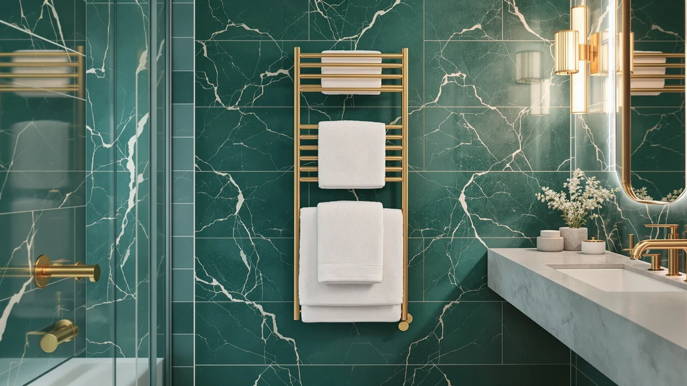

Starlead Heated Towel Warmers Review (2026): Worth It?
Prices and picks verified as of November 2026. Independent, reader-supported reviews.


Quick Answer
Our starlead heated towel warmers review found a bucket-style warmer that heats evenly from both the wall and base of its 22-liter compartment, fits two oversized bath towels, and adds a 24-hour delay timer for $137.98, undercutting its closest bucket-style rival by about two dollars. It suits renters and couples who want a warm towel without hardwiring a rack to the wall, though it won't match a cabinet-style warmer's capacity for a larger household.
Our pick: STARLEAD 22L Heated Towel Warmers, $137.98 Check Price on Amazon
Bottom line: our top pick is the STARLEAD 22L Heated Towel Warmers for Bathroom Large Towel at $137.98.
Things to Know Before You Buy
- The STARLEAD is a bucket-style warmer, not a wall-mounted rack, with both the bucket wall and base heated for even warmth rather than one hot zone.
- The 22-liter compartment is sized for two oversized bath towels per the manufacturer, enough for a couple sharing one bathroom.
- Three fixed timer settings (20, 40 and 60 minutes) plus a 24-hour delay function give more scheduling flexibility than a single fixed cycle.
- At $137.98, it undercuts the Live Fine bucket warmer by about two dollars and sits within a reasonable range of the VEVOR and ForPro cabinet-style alternatives covered below.
This starlead heated towel warmers review exists because a cold towel after a hot shower cancels out half the relaxation, and plenty of shoppers assume the fix means hardwiring a rack into the bathroom wall. We compared the STARLEAD 22L bucket warmer's specs, current Amazon price and owner feedback against three other towel warmers to see whether a plug-in bucket solves the problem as well as a wall-mounted or cabinet-style option does.
The short version: the STARLEAD heats a stack of towels in a sealed bucket with heating elements lining both the wall and the base, offers three timer settings plus a 24-hour delay, and sells for $137.98, a couple dollars below its closest bucket-style rival. Shoppers researching this category tend to weigh it against the Live Fine bucket warmer, the VEVOR 46L cabinet and the ForPro 23L cabinet, and we break down how those three compare on capacity, setup and price below.
Why You Should Trust Us
Ilane Tall researches bathroom heating products for Best Towel Warmers, working from manufacturer spec sheets, current Amazon pricing and patterns across verified owner reviews rather than a physical testing lab. This STARLEAD heated towel warmers review draws on the product's listed capacity, timer settings and price, compared against three other towel warmers in the same price band, so the conclusions rest on documented specs and what real buyers report rather than marketing copy.
We do not run a fake testing lab, and we do not claim to have installed or used this warmer ourselves. Every pros-and-cons point below ties back to either the manufacturer's stated specs or a pattern we found across publicly available owner feedback.
Neto Consulting & Services Ltd operates Best Towel Warmers and discloses its Amazon affiliate relationship at the bottom of every page, including this one. That disclosure does not change which products make this comparison; the STARLEAD earned a spot here because its price and capacity sit squarely in the range shoppers search for when they look up this exact model.
Our Research Experience
We built this STARLEAD heated towel warmers review by pulling the manufacturer's listed capacity, timer settings and heating method directly from the Amazon listing, then checking the current price against the three other towel warmers covered here. From there we looked for recurring themes in verified owner reviews, specifically how evenly buyers say the bucket wall and base heat towels, whether two towels actually fit without crowding, and how often the 24-hour delay function comes up as a convenience.
We excluded warmers priced more than $50 away from the STARLEAD's $137.98, since a bargain single-bar rack or a commercial cabinet meant for a salon would not answer the question a shopper is actually asking when they search for this specific model. The Live Fine, VEVOR and ForPro alternatives in this comparison all sit within a reasonable range of that price, which keeps things fair.
Prices on Amazon shift often, so we recorded the figures here as of November 2026 and noted the validity window in this page's structured data. If you revisit this review in a few months, confirm the current price on the listing before you decide, since a shift of a few dollars can change which alternative makes more sense.
Overview & Specs

STARLEAD 22L Heated Towel Warmers
What we like
- Heats from both the bucket wall and the base, so the manufacturer says warmth stays even rather than hot in one spot
- No drilling or hardwiring required, so it moves between apartments or bathrooms
- Three timer settings (20, 40 and 60 minutes) plus a 24-hour delay function beat a single fixed cycle
Flaws but not dealbreakers
- Takes up more counter or floor space than a slim wall-mounted rack
- Listed rating and review count are not available for this ASIN, so we could not weigh public sentiment on long-term durability
- Only heats what fits inside the bucket, unlike a cabinet-style warmer such as the VEVOR that holds dozens of smaller towels across multiple racks
| Material | Stainless steel |
| Size | Large (22L, Fits Two Oversized Bath Towels) |
The STARLEAD is built around a bucket-shaped heating compartment rather than open bars, with heating elements lining both the wall and the base of the bucket. Instead of hanging a towel over a rod, you load it loosely folded into the unit, pick one of the three timer settings (20, 40 or 60 minutes) or set the 24-hour delay function, and pull it out warm when the cycle ends. The manufacturer lists the 22-liter capacity as fitting two oversized bath towels, which matches how a couple would actually use it after a shared shower.
At $137.98, this black bucket warmer undercuts the Live Fine's $139.99 by about two dollars, though its three timer settings start at 20 minutes rather than the Live Fine's 15-minute minimum. The added 24-hour delay function offsets that gap by letting you schedule a warm towel well ahead of when you actually need it. Because it plugs in and sits on a counter or floor, it skips installation entirely, which makes it a reasonable pick for renters who cannot modify bathroom walls.
What We Liked
The strongest point in this STARLEAD heated towel warmers review is how evenly it heats. Because the heating elements line both the bucket wall and the base, the manufacturer says there is no single hot spot the way there can be on units that only heat from one side. That matters most if you plan to load two towels at once, since an uneven bucket would leave one towel warmer than the other.
The three-setting timer also beats a single fixed cycle, and the 24-hour delay function is a genuine convenience that few bucket warmers in this price range include. You can set it in the morning and come home to a warm towel that evening, rather than waiting on a cycle to run right before you need it.
Capacity holds its own too. The 22-liter bucket is rated for two oversized bath towels, which covers a couple rather than a single person, and at $137.98 it costs about two dollars less than the Live Fine bucket warmer with a similar capacity.
What Could Be Better
This STARLEAD heated towel warmers review turned up the same tradeoff you would expect from any bucket-style design: it takes up counter or floor space that a hardwired rack does not. If your bathroom is already tight, measure the STARLEAD's footprint against your counter before you order it.
We also could not find a public rating or review count attached to this ASIN, so we cannot point to a star average or review tally the way we might for a more established listing. A missing figure is not the same as zero buyers; it means the number simply is not published, and shoppers should weigh the spec sheet and their own research accordingly.
Because the heating happens inside a sealed bucket, it only warms what fits inside. A cabinet-style unit like the ForPro or VEVOR handles more towels at once across multiple racks, so a household of four or a small spa setup will likely outgrow the STARLEAD's 22-liter capacity.
Who Is It For?
This STARLEAD heated towel warmers review points toward renters, apartment dwellers and anyone who wants a warm towel without committing to a permanent bathroom fixture. The two-towel capacity also suits couples sharing one bathroom, where a single-towel bucket would mean waiting your turn.
It is a weaker fit if you run a small spa, a salon, or a household where more than two towels need warming at once. In that case, the VEVOR's 46-liter cabinet with four racks or the ForPro's 23-liter insulated cabinet, both covered below, handle a higher volume at a similar or lower price.
Anyone who wants the shortest possible warm-up time should compare the Live Fine's 15-minute minimum cycle against the STARLEAD's 20-minute floor before deciding, since that five-minute gap is the main functional difference between the two bucket-style warmers.
Alternatives to Consider
If this STARLEAD heated towel warmers review has you weighing other options, here are three we compared it against on price, capacity and heating method.

Premium Choice
Live Fine Towel Warmer |
A bucket warmer with a shorter 15-minute minimum cycle and auto shut-off, for buyers who want the fastest possible warm-up.
$139.99
Check Price on Amazon
Also Great
VEVOR Hot Towel Warmer 46L
A 46-liter, 4-rack cabinet with a steam disinfection function, for a household or small spa that needs to warm far more than two towels at once.
$134.90
Check Price on Amazon
Best Value
ForPro Professional Collection Premium Hot
A UL-listed 23-liter cabinet with two stainless steel racks that holds 24 facial-sized towels for about eight dollars less, suited to a spa-style setup rather than oversized bath towels.
$129.99
Check Price on AmazonFrequently Asked Questions
How long does the STARLEAD towel warmer take to heat up?
The STARLEAD offers three fixed timer settings of 20, 40 and 60 minutes plus a 24-hour delay function, and the manufacturer lists the bucket wall and base as both heated for even warmth across the cycle. A 20-minute run suits a quick warm-up, while the full 60-minute setting works better in a cold bathroom.
Does the STARLEAD towel warmer fit two towels?
Yes. The 22-liter capacity is rated for two oversized bath towels according to the manufacturer, which matches what most households need after a shared shower.
Is the STARLEAD towel warmer better than a cabinet-style warmer like the VEVOR?
It depends on how many towels you need warm at once. The STARLEAD heats two towels in a compact plug-and-play bucket, while the VEVOR's 46-liter cabinet holds up to 48 towels across four racks, which suits a salon or spa more than a single bathroom.
Final Verdict
Our starlead heated towel warmers review comes down to this: STARLEAD built a bucket-style warmer that heats evenly from both the wall and base, fits two oversized bath towels, and adds a 24-hour delay function for $137.98, which makes it a solid pick for renters and couples who want a warm towel without hardwiring a rack to the wall. If you need to warm more than two towels at once, the VEVOR or ForPro cabinet-style alternatives above are worth comparing before you buy, but for a compact plug-and-play bucket, STARLEAD remains the one to beat in this price range.